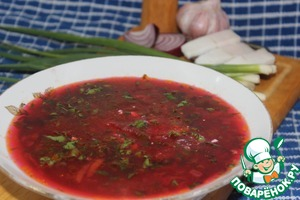

Борщ по-львовски
Информация взята с сайта: www.povarenok.ru
Описание: Я, как русско-украинская "девушка", очень люблю разнообразные борщи! В моей копилочке их много. Хочу поделиться с вами рецептом этого вкусного борща! Я просто уверена, что этот борщик с удовольствием будут кушать как взрослые, так и детишки!
Время приготовления: 180 минут
Ингредиенты для "Борщ по-львовски":
- Говядина (на косточке) — 1 кг
- Свекла (средняя) — 4 шт
- Картофель (средний) — 6 шт
- Лук репчатый — 2 шт
- Морковь (крупная) — 2 шт
- Масло сливочное (топлёное) — 5 ст. л.
- Томатная паста — 2 ст. л.
- Сосиска — 3 шт
- Уксус — 2 ст. л.
- Сахар — 2 ч. л.
- Перец черный ( горошком) — 6 шт
- Лист лавровый — 1 шт
- Перец красный жгучий (по вкусу, я брала стручковый) — 2 ч. л.
- Соль (по вкусу) — 2 ст. л.
- Укроп — 5 веточ.
- Петрушка — 5 веточ.
- Перец болгарский (красный) — 1 шт
- Масло растительное (для жаренья овощей) — 100 мл
Рецепт "Борщ по-львовски":
Берём говядину на косточке, хорошенько моем и кладём в кастрюлю с холодной водой. Чистим одну морковь и одну луковицу, кладём к мясу. Ставим на средний огонь, доводим до кипения, убавляем огонь и варим часа два, периодически снимая пенку. Когда бульон будет готов, вынимаем лук и морковь, они нам больше не нужны.
Свеклу хорошенько моем и варим до полуготовности. Очищаем от шкурки.
Чистим картошечку и режем её кубиками.
Оставшуюся морковь и лук чистим. Морковь натрём на крупной тёрке, лук нарежем кубиками. Болгарский перец нарежем полукружьями. Всё вместе обжарим до готовности.
Свеклу нарежем тонкой соломкой. Я пользуюсь тёркой Бернера (насадка для корейской моркови). Положим нашу свеколку на сковороду со сливочным маслом, добавим томатную пасту, уксус и сахарный песок. Будем тушить минут 15.
Когда наше мясо сварилось, мы его вынем и порежем средними кубиками. В бульон забросим картошку. Пусть варится. А пока нарежем сосиски кружочками и обжарим их на сливочном масле до золотистой корочки.
Когда картошка будет почти готова, добавляем в бульон мясо, зажарку, тушеную свеколку, перчик чили по вкусу, солим и перчим (перец молотый-2 ч. л.). Доводим до кипения, добавляем обжаренные сосиски. Посыпаем зеленью и томим минут 10 на медленном огонёчке.
Накрываем кастрюлю крышкой, даём ещё настояться минут 15, и наш вкусный борщ готов! Подаём борщ со сметаной и посыпаем мелко нарубленной зеленью./
А если у вас есть сало и чесночок, то это вообще песня!
Приятного аппетита!!!
Источник: www.povarenok.ru

{kind=link}
{kind=link}
{kind=link}
{kind=link}
{kind=link}
{kind=link}
{kind=link}
{kind=link}